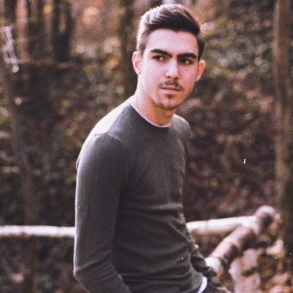

My resume V1

My objectives:
I want to become a web developer and I also want to learn softwere developer. Currently I'm working my way up to this because I am tired of my current job and I also always wanted to work in the IT area.
Education:
I ended up finishing only highschool and being a college dropout but here is what I've studied and where I've studied:
- Electronics and automations
- Philosophy
My work experience:
- 2021-2022
- Tenaris Silcotube - Electrician
- 2022-Present
- Michelin - Electrician and Automation Tehnician
Skills:
- Analytical thinking 🤔
- Good observation sense 🔍
- Very good comunication skills 🗣
- Very good digital competences 💻